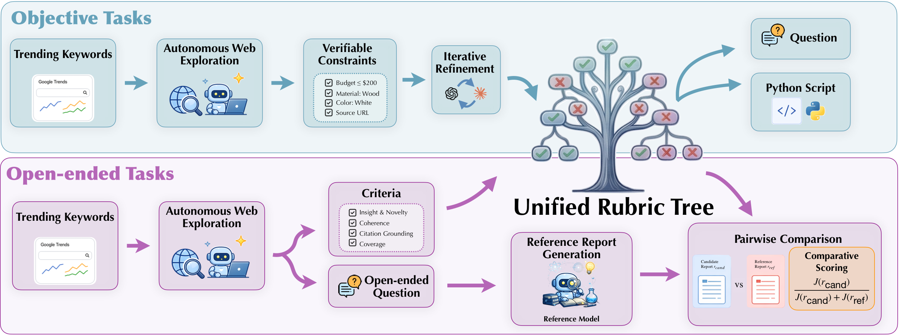
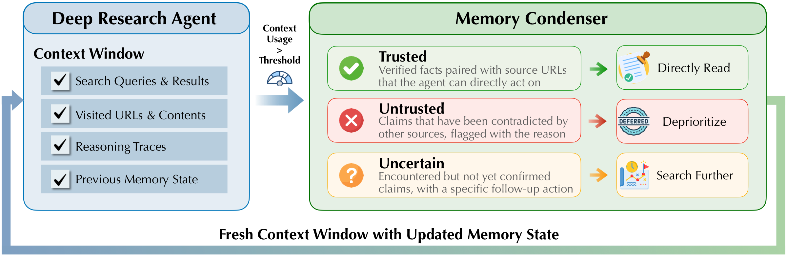

QUEST: Training Frontier Deep Research Agents with Fully Synthetic Tasks
We release QUEST, a family of open models ranging from 2B to 35B that serve as general-purpose deep research agents designed to handle a wide range of search tasks, with strong capabilities in fact seeking, citation grounding, and report synthesis.
The recipe combines a rubric-tree-based data synthesis pipeline, structured context management, and a three-stage training process spanning mid-training, supervised fine-tuning, and reinforcement learning. We released everything: models, data, and training scripts.
Comprehensive comparison across eight benchmarks that evaluate different capabilities: fact seeking, citation grounding, and report synthesis. For BrowseComp and BrowseComp-Plus, following prior work, we adopt the discard-all strategy.
Overview
QUEST's performance comes from three components: a data synthesis pipeline that constructs tasks with tree-structured rubrics, a context management strategy for long-horizon trajectories, and a training pipeline that optimizes the model with rubric-based signals.
We evaluate QUEST on eight benchmarks spanning both objective and open-ended research settings. The overview below summarizes which capabilities these benchmarks test and how QUEST compares with existing deep research agents in training recipe and released assets.
| Model | Scale | Capability | Task Synthesis | Verification | Context Management | Training Pipeline | Open-Sourced | ||
|---|---|---|---|---|---|---|---|---|---|
| Data | Synthesis Script |
Training Code |
|||||||
| Tongyi-DR | 30B |
Fact Seeking
Report Synthesis
|
✓ | Exact Match | ✓ |
MT
→
SFT
→
RL
|
× | × | × |
| DR Tulu | 8B |
Report Synthesis
Citation Grounding
|
× | Rubric | × |
SFT
→
RL
|
✓ | × | ✓ |
| OpenResearcher | 30B |
Fact Seeking
|
× | Exact Match | × |
SFT
|
✓ | × | ✓ |
| REDSearcher | 30B |
Fact Seeking
|
✓ | Exact Match | × |
MT
→
SFT
→
RL
|
✓ | × | ✓ |
| QUEST (ours) | 2B–35B |
Fact Seeking
Report Synthesis
Citation Grounding
|
✓ | Rubric Tree | ✓ |
MT
→
SFT
→
RL
|
✓ | ✓ | ✓ |
These three capabilities define a broad capability profile for deep research agents: retrieving precise information, synthesizing knowledge into coherent, well-structured reports, and providing verifiable citations to support the claims in their responses. Despite their complementary nature, existing benchmarks and agent systems typically evaluate or support them only in isolation. QUEST addresses them jointly within a unified framework.
Additional Analysis
30B-Scale Research Agent Comparison
To control for scale, we also train QUEST-30B from Qwen3-30B-A3B and compare it with Tongyi-DR and OpenResearcher. QUEST-30B performs best on four of the eight benchmarks, including Mind2Web 2 and DeepResearch Bench, suggesting that broad benchmark coverage comes from the training recipe rather than parameter count alone.
The pattern is capability-specific. Tongyi-DR remains strong on fact-seeking benchmarks such as BrowseComp, HLE, and GAIA, which align with single-answer synthetic data. OpenResearcher is strongest on BrowseComp-Plus. QUEST-30B is more evenly balanced across fact seeking, citation grounding, and report synthesis.
BrowseComp
avg@3
HLE
avg@3
GAIA
avg@3
Mind2Web 2
avg@3
LiveResearchBench
avg@3
DeepResearch Bench
avg@3
WideSearch
Item F1 avg@4
BrowseComp Plus
avg@3
Smaller Versions
We also train SFT-only variants from 2B through 35B scales. These models use the same data and inference configuration, letting us isolate how much deep research capability can be transferred into deployable, lower-cost agents.
The result is unexpectedly strong on fact-seeking benchmarks: even QUEST-2B-SFT reaches 30.3 on HLE and 72.8 on GAIA. Open-ended report synthesis remains harder for small models, which points to a useful next target for lightweight private or local deep research agents.
BrowseComp
avg@3
Mind2Web 2
avg@3
HLE
avg@3
DeepResearch Bench
avg@3
BrowseComp-Plus
avg@3
WideSearch
Item F1 avg@4
GAIA
avg@3
LiveResearchBench
avg@3
The Effect of Mid-training and Reinforcement Learning
To trace how each training stage contributes, we evaluate the same 35B base checkpoint across four variants: the vanilla Qwen3.5-35B-A3B agent, SFT, MT+SFT, and the full MT+SFT+RL recipe.
The effect is not uniform: SFT helps most objective tasks but can hurt open-ended report quality; MT improves the SFT model overall; RL produces the largest gains on open-ended benchmarks while slightly trading off reasoning-heavy HLE and GAIA scores. Overall, the full MT+SFT+RL recipe performs best across the compared variants.
BrowseComp
avg@3
Mind2Web 2
avg@3
HLE
avg@3
DeepResearch Bench
avg@3
LiveResearchBench
avg@3
GAIA
avg@3
BrowseComp-Plus
avg@3
WideSearch
Item F1 avg@4
Training Recipe
Training a deep research agent requires data that goes beyond standard question-answer pairs. Single-answer supervision is useful for fact-seeking tasks with short final answers, but it does not cover many research tasks that require aggregating information across multiple sources, satisfying several constraints, or producing source-supported long-form outputs.
QUEST builds its training data around synthetic queries paired with rubric trees. A rubric tree decomposes each task into verifiable criteria, allowing the same framework to handle unique-answer tasks, tasks with multiple valid solutions, and open-ended report-style questions. Its score also provides a fine-grained training signal beyond binary correctness, which is used later for filtering SFT trajectories and defining rubric-based rewards in RL.

Synthetic Rubric Trees
Each training task is paired with a rubric tree: a structured set of criteria that can score fact correctness, constraints, citations, completeness, readability, and insight. Objective tasks are translated into executable checks, while open-ended tasks are judged against reference reports with rubric-level scoring.
This lets one framework cover unique-answer tasks, tasks with multiple valid solutions, and open-ended research questions. The root score gives a fine-grained reward beyond binary correctness, while the leaves expose which factual or citation-level requirements were actually satisfied.
Structured Context Management
Deep research requires many search and visit steps, so QUEST does not keep every raw observation forever. When the context grows long, a condenser turns the interaction history into a structured context state containing trusted facts, uncertain leads, and untrusted claims. The agent then resumes from that compact context and continues researching.
The context state is deliberately structured rather than a loose summary. Trusted entries can be reused without redundant searches, uncertain entries become follow-up actions, and untrusted entries are deprioritized. This keeps long-horizon research coherent even when the raw interaction history no longer fits in the active context window.

MT, SFT, and RL
| Stage | Type | #Task | #Trajectory | #Session |
|---|---|---|---|---|
| MT | Context Summarization | 309,346 | - | - |
| MT | Relevant Info Extraction | 1,052,663 | - | - |
| SFT | Objective | 5,070 | 19,435 | 39,861 |
| SFT | Open-ended | 1,958 | 4,485 | 11,903 |
| RL | Objective | 864 | - | - |
| RL | Open-ended | 269 | - | - |
MT: Context Management and Evidence Extraction
MT equips the base model with long-context understanding and awareness of the structured context state used by the agent. It contains two auxiliary tasks. In context summarization, the model receives a long interaction history and learns to produce a structured context-state JSON generated by the context condenser. In relevant information extraction, the model receives a raw HTML page and an extraction goal, then filters out navigation elements, advertisements, and off-topic content.
Both MT targets are reused from the agent pipeline rather than separately annotated: context-state targets come from the condenser, while extraction targets are derived from visit-tool outputs in collected trajectories. They teach the model to work with the same intermediate artifacts it will see during inference: condensed context states and extracted evidence from webpages.
The goal is not to teach the model a final-answer format, but to adapt it to the intermediate artifacts that deep research depends on: noisy webpage content, extracted evidence, and compact context states that can be reused after long histories are compressed.
Supervised Fine-Tuning: Tool-Use Trajectories
SFT trains the model on full tool-use trajectories collected from synthetic tasks and scored by their rubric trees. For each synthesized query, a teacher agent attempts the task and the output is evaluated against the query-specific protocol. Successful trajectories are retained as SFT targets; for objective tasks that fail initially, the fine-grained evaluation result is injected as feedback and the teacher retries the task.
Outputs are standardized into an inline citation format, where factual claims are paired with supporting URLs. Long trajectories are then decomposed into session-level examples between context condensation events, aligning the training unit with the agent's effective working context during inference.
This session-level formulation is important for long trajectories: the model does not need the entire trajectory in context at once, but it still learns to continue from the same structured state that will be available at inference time.
Reinforcement Learning: Rubric and Fact Rewards
RL applies GRPO-style outcome-based reinforcement tuning with two reward signals. The first is the rubric-tree reward, computed by the task-specific evaluation protocol. Objective tasks use the rubric score directly, while open-ended tasks map pairwise rubric judgments against a reference response into ordered reward levels.
The second is the fact-checking reward for citation faithfulness. QUEST extracts cited fact-URL pairs, retrieves the referenced webpages, and uses an evaluator model to label each citation as supported, unsupported, or unknown. The fact-checking score is the fraction of supported citations among determinate labels.
The final reward is \(R = 0.75 \cdot s_{\mathrm{rubric}} + 0.25 \cdot \min(s_{\mathrm{fact}}, s_{\mathrm{rubric}})\), so citation credit is upper-bounded by task completion. For each prompt, rewards are computed from full rollout responses and assigned to all session-level examples derived from the same rollout, with advantages normalized within the rollout group.
This design keeps the optimization target tied to the complete research outcome while still allowing training to scale over condensed sessions. The rubric reward pushes the agent toward task completion; the fact-checking reward discourages unsupported citations and hallucinated evidence.
Try QUEST
Send a question to QUEST HuggingFace Space. The first request may take 30–60 seconds while the Space wakes up.